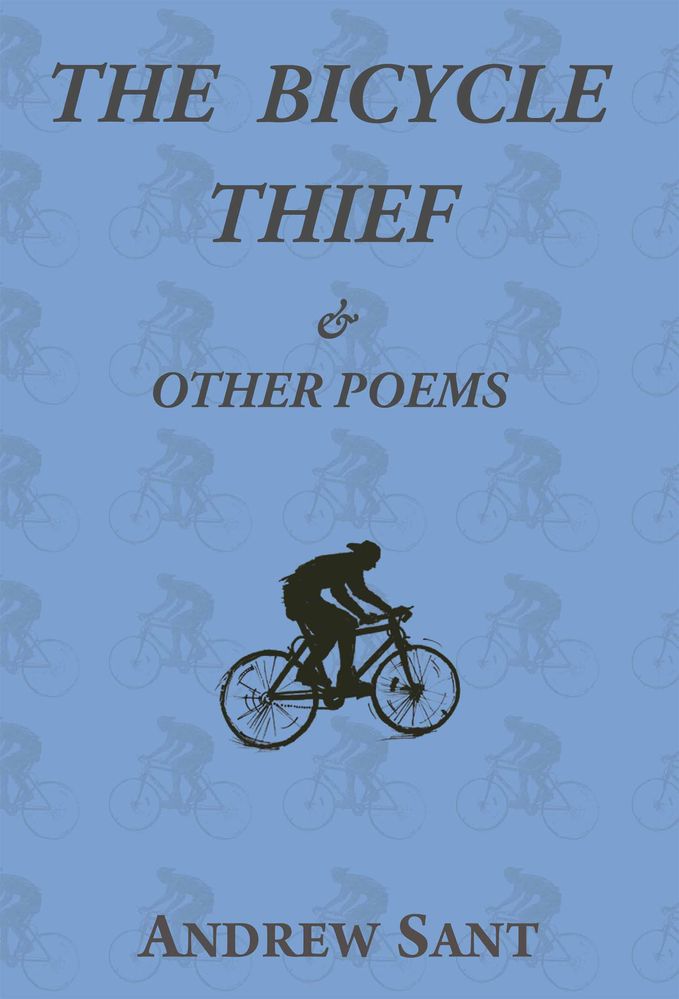

Back to Home page
POETRY
150 Motets
Homer Rieth
author of The Dining Scene and Wimmera
Following the
exceptional success of his epic poem Wimmera, a single
poem of 370 pages, Homer Rieth has produced a work based on the sonnet
form. In 150 Motets
he ‘loads every rift with ore’. The motets are a voyage into
autobiography - though not in a conventional sense of the genre -
rather they unfold as a stream of consciousness. Hence there is no
clear chronological consistency to the order of the sonnets - yet one
finds that they focus around a particular memory or image that provides
a nucleus for their clustering.
There is an imaginative contiguity in the way the sonnets follow and anticipate each other. The motet as a musical form has historical roots in sacred music for unaccompanied voices - and the poems, though proceeding from a governing voice addressing memory and desire, open out into several voices, providing the revelation of both the central speaker and the illusive other. They call upon both the author’s own life in Australia and Europe and his sense of religious consciousness. If you want gloriousness in your poetry, 150 Motets will provide it.
150 Motets includes a prize-winning short story by Homer Rieth set in the Greek monastery of Mount Athos.
There is an imaginative contiguity in the way the sonnets follow and anticipate each other. The motet as a musical form has historical roots in sacred music for unaccompanied voices - and the poems, though proceeding from a governing voice addressing memory and desire, open out into several voices, providing the revelation of both the central speaker and the illusive other. They call upon both the author’s own life in Australia and Europe and his sense of religious consciousness. If you want gloriousness in your poetry, 150 Motets will provide it.
150 Motets includes a prize-winning short story by Homer Rieth set in the Greek monastery of Mount Athos.

The Bicycle Thief & Other Poems
Andrew Sant
“Fuel makes a
distinguished contribution to what is now often called ecocentric
poetry... a bravura performance.” (John Lucas, Critical Survey UK)
John Lucas’ observation that Andrew Sant has become a fine exponent of eco-poetry is reinforced in The Bicycle Thief & Other Poems. Even the comic narrative of the mischievous title poem, with its shady goings-on, is a celebration of the energy efficiency of pedal power.
Energy, natural and man-made, is in fact at the heart of this collection – energy released, for example, by the speed of the escaping cyclist or via incidents involving the planet’s eruptions and metamorphoses in geological time. Either way, here is the second law of thermodynamics writ large, creation and destruction in a binary tussle.
At another extreme, motor vehicles are depicted in a ‘personal history’ as drolly perceived harbingers of an apocalypse.
Populated by a variety of species, these are poems that get about – lively, unfettered and expansive.
A number of them are monologues, sometimes dramatic, which give voice to an array of characters whose identities are, to say the least, fluid and circumstantial. One, it appears, may well be autobiographical. His now familiar and somewhat cynical persona, Mr Habitat (from his previous two collections), makes a reappearance.
This is an exuberant, occasionally dark collection which, from the opening poem, explores ‘fresh products of perspective’ with Sant’s characteristically restless curiosity.
As Brian Henry commented in PN Review (UK) “Andrew Sant writes intellectually compelling and formally taut poems... made possible when an exceptional facility with language collides with everyday subjects.” There are many such pleasing collisions in The Bicycle Thief.
John Lucas’ observation that Andrew Sant has become a fine exponent of eco-poetry is reinforced in The Bicycle Thief & Other Poems. Even the comic narrative of the mischievous title poem, with its shady goings-on, is a celebration of the energy efficiency of pedal power.
Energy, natural and man-made, is in fact at the heart of this collection – energy released, for example, by the speed of the escaping cyclist or via incidents involving the planet’s eruptions and metamorphoses in geological time. Either way, here is the second law of thermodynamics writ large, creation and destruction in a binary tussle.
At another extreme, motor vehicles are depicted in a ‘personal history’ as drolly perceived harbingers of an apocalypse.
Populated by a variety of species, these are poems that get about – lively, unfettered and expansive.
A number of them are monologues, sometimes dramatic, which give voice to an array of characters whose identities are, to say the least, fluid and circumstantial. One, it appears, may well be autobiographical. His now familiar and somewhat cynical persona, Mr Habitat (from his previous two collections), makes a reappearance.
This is an exuberant, occasionally dark collection which, from the opening poem, explores ‘fresh products of perspective’ with Sant’s characteristically restless curiosity.
As Brian Henry commented in PN Review (UK) “Andrew Sant writes intellectually compelling and formally taut poems... made possible when an exceptional facility with language collides with everyday subjects.” There are many such pleasing collisions in The Bicycle Thief.

Eldershaw
Stephen Edgar
The
heart of Stephen Edgar’s new book is an extended narrative poem, or
rather three separate but interlinked poems, moving forwards and
backwards in time from the Second World War to the present day, and
ranging from Hobart to Sydney, to England and Greece. Drawing on
personal experience, but seen through the lens of fiction, they isolate
and enact those charged episodes in the lives of two characters, Helen
and Luke, which shape and scar them, both separately and together:
self-discovery and its thwarting, the damage, willed and unwitting, of
families and marriage, love and the healing of grief and
those
vertiginous “long perspectives/ Open at each instant of our lives”
which Larkin spoke of. The book also includes sixteen shorter lyrics,
some of them taking up themes and incidents from the narratives,
directly, as in the red lips printed on a tissue in “Inarticulate”, or
glancingly, as in “The Pictures” with its wrist netted by the shining
slippery loops of Aegean light.

MEMOIR
An Imaginary Mother
Bron Nicholls
In
1932, eleven-year-old Phyllis, and Meg, her younger sister, were placed
in an Institute for Neglected and Destitute Children. Their father did
the placing. Their mother, although ill, was still alive, and as the
girls were neither neglected nor destitute, the move could only mean
one thing to them: they had been abandoned. Not wanted. Dumped.
That belief, and the memories of their years in The Sutherland Home, haunted Phyllie and Meg throughout their lives, and seeped into the lives of their own children.
Phyllis died, almost eighty, in the year 2000. During the past decade there has been a huge increase in the number of words – technical, sterile terms – with which to talk about mental illness. Bron Nichols has avoided all such terms in telling this story. As Phyllis saw it: swift changes of mind and mood – from despair to melancholy to ecstasy – were the inevitable ups and downs of a full life, and she worked around her own madnesses with a mixture of courage, stealth, ingenuity and – whenever possible – with humour.
Bron Nichols was Phyllis’ firstborn, and this is an account – a personal memoir, not a biography – of an intense relationship, spanning fifty-six years, with a secretive, complex and unpredictable woman: her mother. Phyllis, who also had a humped back, and her religiously rigid husband John emerge through Nichols’ demotic prose with a real understanding for their situation and era. They are respected.
A larger publisher rejected this book on the ridiculous grounds that it was “too literary”, yet one of their readers reports stated: “It reminded me of Brian Matthews’ A Fine and Private Place and Raymond Gaita’s Romulus, My Father.” Clearly, An Imaginary Mother deserves to see the light of day.
That belief, and the memories of their years in The Sutherland Home, haunted Phyllie and Meg throughout their lives, and seeped into the lives of their own children.
Phyllis died, almost eighty, in the year 2000. During the past decade there has been a huge increase in the number of words – technical, sterile terms – with which to talk about mental illness. Bron Nichols has avoided all such terms in telling this story. As Phyllis saw it: swift changes of mind and mood – from despair to melancholy to ecstasy – were the inevitable ups and downs of a full life, and she worked around her own madnesses with a mixture of courage, stealth, ingenuity and – whenever possible – with humour.
Bron Nichols was Phyllis’ firstborn, and this is an account – a personal memoir, not a biography – of an intense relationship, spanning fifty-six years, with a secretive, complex and unpredictable woman: her mother. Phyllis, who also had a humped back, and her religiously rigid husband John emerge through Nichols’ demotic prose with a real understanding for their situation and era. They are respected.
A larger publisher rejected this book on the ridiculous grounds that it was “too literary”, yet one of their readers reports stated: “It reminded me of Brian Matthews’ A Fine and Private Place and Raymond Gaita’s Romulus, My Father.” Clearly, An Imaginary Mother deserves to see the light of day.